Primitive
Primitive ale unei funcții. Integrala nedefinită a unei funcții
Fie intervalul de numere reale și funcția definită pe acest interval, notată  .
.
Definiția CI1: Admiterea primitivei pe intevalul I
Spunem că funcția admite primitive pe intervalul  , dacă există o funcție , astfel încât:
, dacă există o funcție , astfel încât:
- funcția
 să fie o funcție derivabilă pe intervalul ;
să fie o funcție derivabilă pe intervalul ; - să fie îndeplinită următoarea condiție: oricare ar fi
Definiția CI2: Funcție primitivă
Se numește funcție primitivă a funcției  pe intervalul , funcția definită mai sus, care îndeplinește condițiile
pe intervalul , funcția definită mai sus, care îndeplinește condițiile  și
și  . Acestă funcție se mai numește și funcția antiderivată a funcției pe intervalul .
. Acestă funcție se mai numește și funcția antiderivată a funcției pe intervalul .
Definiția CI3: Funcție primitivabilă
Dacă există o funcție , care îndeplinește condițiile și , atunci se spune că funcția este primitivabilă pe intervalul .
Exemple:
- Funcția nulă admite primitive pe mulțimea
 . Într-adevăr, pentru orice număr real funcția este o funcție derivabilă pe mulțimea , iar derivata aceste funcții este (
. Într-adevăr, pentru orice număr real funcția este o funcție derivabilă pe mulțimea , iar derivata aceste funcții este ( fiind o constantă), pentru orice
fiind o constantă), pentru orice - Fie funcția Funcțiile de forma , respectiv cu constanta , sunt primitive ale funcției pe mulțimea
 deoarece, prin derivare obținem că oricare ar fi
deoarece, prin derivare obținem că oricare ar fi - O primitivă a funcției este funcția derivabilă De asemenea și funcția
 este o primitivă a funcției pe intervalul
este o primitivă a funcției pe intervalul  .
.
Observații:
- Am folosit formulele din secțiunea Tabel - Derivatele funcțiilor elementare, din cadrul ghidului Funcții derivabile.
- În exemplele de mai sus putem observa ca funcțiile date admit mai multe primitive pe intervalul de definiție. Relația care se stabilește între primitivele unei funcții este dată de următorul rezultat:
Teorema CI4: Relația dintre două primitive
Fie intervalul și funcția definită pe acest interval .
Dacă funcția are două primitive pe intervalul , notate cu 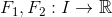, atunci există o constantă  , astfel încât oricare ar fi
, astfel încât oricare ar fi
Cu alte cuvinte, această teoremă ne spune că două primitive ale unei funcții primitivabile diferă printr-o constantă. Adică, dacă am avea o primitivă a funcției  , atunci orice altă primitivă, de exemplu
, atunci orice altă primitivă, de exemplu  , a funcției este de forma , unde este o funcție contantă pe intervalul .
, a funcției este de forma , unde este o funcție contantă pe intervalul .
Din această teoremă putem trage concluzia că dacă funcția admite o primitivă, atunci această funcție admite o infinitate de primitive.
În cele ce urmează ți se va arăta cum poți afla o funcție, cunoscându-i o primitivă.
Exerciții rezolvate:
Să se determine funcția  pentru care o primitivă a sa este de forma:
pentru care o primitivă a sa este de forma:
- , cu
 ;
; - cu
 ;
; - , cu .
Rezolvare:
Pentru a rezolva acest exercițiu ne folosim de noțiunile referitoare la funcțiile derivavile detaliate în ghidul Funcții derivabile și anume, vom folosi următoarele formule de derivare:
- Funcția este derivabilă pe mulțimea , fiind compusă din funcții elementare.
Conform condiției a Definiției CI1: Admiterea primitivei pe intevalul , avem că oricare ar fi  Atunci, pentru cazul nostru avem:
Atunci, pentru cazul nostru avem:
- Funcția este derivabilă pe mulțimea , fiind compusă din funcții elementare.
Conform condiției a Definiției CI1: Admiterea primitivei pe intevalul , avem că oricare ar fi Atunci, pentru cazul nostru avem:
![\begin{align*} f(x)&={F}'(x)\\\\ &={\left [x \left ( \ln^2x-\ln x^2+1 \right ) \right ]}'\\\\&={x}'\cdot \left ( \ln^2x-\ln x^2+1 \right )+x\cdot { \left ( \ln^2x-\ln x^2+1 \right )}'\\\\&=1\cdot \left ( \ln^2x-\ln x^2+1 \right )+x\cdot \left [ {(\ln^2x)}'-{(\ln x^2)}'+{1}' \right ]\\\\&= \ln^2x-\ln x^2+1 +x\cdot \left [ 2\cdot {(\ln x)}' \cdot \ln x-\displaystyle\frac{{x^2}'}{x^2}+0\right ]\\\\&= \ln^2x-\ln x^2+1 +x\cdot\left ( 2\cdot \frac{1}{x}\cdot \ln x-\frac{2x}{x^2} \right )\\\\&=\ln^2x-\ln x^2+1 +x\cdot\left ( 2\cdot \frac{1}{x}\cdot \ln x-\frac{2}{x} \right )\\\\&=\ln^2x-\ln x^2+1 +x\cdot\frac{2}{x}\cdot\left(\ln x-1 \right )\\\\ &=\ln^2x-\ln x^2+1 +2(\ln x-1)\\\\&=\ln^2 x-2\ln x+1+2\ln x-2\\\\ &=\ln^2 x-1 \end{align*}](../media/webbooks/404/2688/images/equations/sjafgxobrdeyphmlzng8ag==.gif)
- Funcția este derivabilă pe mulțimea , fiind compusă din funcții elementare.
Conform condiției a Definiției CI1: Admiterea primitivei pe intevalul , avem că oricare ar fi Atunci pentru cazul nostru avem:
Definiția CI5: Integrală nedefinită
Fie un interval . Fie funcția o funcție care admite primitive pe acest interval
Se numește integrală nedefinită a funcției , mulțimea tuturor primitivelor funcției pe intervalul .
Această mulțime se notează astfel , unde  este mulțimea formată din funcțiile constante.
este mulțimea formată din funcțiile constante.
Definiția CI6: Operația de integrare
Se numește operația de integrare acea operație prin care se determină mulțimea primitivelor unei funcții.
Observații:
- Dacă
 și , atunci putem defini operațiile:
și , atunci putem defini operațiile: - ;
 , ;
, ;- , .
- Pentru mulțimea a funcțiilor constante pe intervalul au loc egalitățile: oricare ar fi .
Exemple:
Cu ajutorul notației utilizate pentru integrala nedefinită, pentru exemplele de mai sus putem scrie astfel:
- Integrala nedefinită a funcției este oricare ar fi
- Integrala nedefinită a funcției este oricare ar fi
- Integrala nedefinită a funcției este oricare ar fi
Primitive uzuale
Fie intervalul de numere reale notat cu și funcția care admite primitive pe intervalul
Definiția CI1: Admiterea primitivei pe intevalul ne spune că dacă o primitivă a funcției este o funcție de forma , atunci funcția este o funcție derivabilă și oricare ar fi
Astfel, putem spune că definiția primitivei dă posibilitatea determinări acesteia în strânsă legătură cu folosirea formuleleor de derivare învățate în clasa a XI-a, formule pe care le poți găsi citind Ghidul | Funcții derivabile.
Primitive deduse din derivatele funcțiilor elementare
Pentru a se înțelege acest procedeu, dăm următoarele exemple:
- Avem că sau , de unde obținem integrala nedefinită sau
- Fie funcția 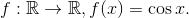 Derivata acestei funcții este 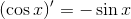, de unde obținem că
- Derivata funcției 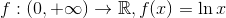 este 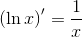, de unde ne rezultă integrala nedefinită
În mod analog, pentru alte funcții elementare construim următorul tabel cu integrale nedefinite:
| Nr. crt. | Funcția | Integrala nedefinită |
| 1. | ||
| 2. | ||
| 3. | 0,\ a\neq 1"> | 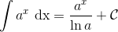 |
| 4. |  | |
| 5. | ||
| 6. | ||
| 7. | ||
| 8. |  | 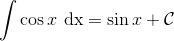 |
| 9. |  | 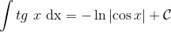 |
| 10. | ||
| 11. | ||
| 12. | ||
| 13. | 0"> | |
| 14. | 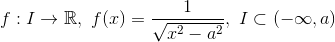 sau | |
| 15. |
Exerciții rezolvate:
- Să se determine mulțimea primitivelor următoarelor funcții:
- , cu
- 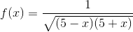, cu
Rezolvare:
- Pentru a rezolva acest exercițiu ne folosim de formula 3. din tabelul de mai sus. Astfel, avem că:
- Pentru a rezolva acest exercițiu ne folosim de formula 13. din tabelul de integrale nedefinite de mai sus. Obținem:
Primitive deduse din derivarea funcțiilor compuse
Pentru înțelegerea procedeului, avem următorul exemplu:
- Derivăm funcția
 Avem:
Avem:
de unde obținem că
Generalizând exemplul de mai sus, pentru intervalul și funcția derivabilă pe intervalul , notată cu avem că De aici obținem că funcția  este o primitivă pentru funcția compusă de unde obținem că
este o primitivă pentru funcția compusă de unde obținem că
Analog, dacă este o funcție derivabilă pe intervalul , obținem următorul tabel cu integrale nedefinite ale funcțiilor compuse:
| Nr. crt. | Integrala nedefinită |
| 1. | |
| 2. | |
| 3. | |
| 4. | |
| 5. | |
| 6. | |
| 7. | |
| 8. | |
| 9. | |
| 10. | |
| 11. | |
| 12. | |
| 13. | |
| 14. | 0,\ u(I)\subset (-a,a)"> |
| 15. | 0,\ u(I)\subset (-\infty,a)"> sau |
| 16. |
În general are lor următoarea teoremă:
Teorema CI13: Formula de schimbare de variabilă
Fie intervalele  și funcțiile care îndeplinesc proprietățile:
și funcțiile care îndeplinesc proprietățile:
- funcția este o funcție derivabilă pe intervalul ;
- funcția este o funcție care admite primitive pe intervalul
 .
.
Dacă funcția este o primitivă a funcției 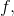 atunci funcția compusă  este o funcție care admite primitive pe intervalul și are loc următoarea egalitate:
este o funcție care admite primitive pe intervalul și are loc următoarea egalitate:
Exerciții rezolvate:
Să se calculeze următoarele integrale nedefinite:
- oricare ar fi ;
- oricare ar fi ;
- oricare ar fi .
Rezolvare:
- Calculăm
Observăm că dacă , atunci prin derivare se obține:
.
Pentru a calcula integrala nedefinită dată facem următorul artificiu de calcul: observăm că , dar în integrală avem doar , așadar înmulțim integrala cu și astfel obținem:
Pentru a rezolva acest exercițiu am folosit, din tabelul de mai sus, formula 2. , pentru
- Calculăm
Dacă , atunci:
.
Integrala nedefinită dată devine:
Am folosit, așa cum ai putut observa, formula 5. din tabelul de mai sus.
- Calculăm 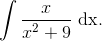
Fie .
Dacă derivăm se obține:
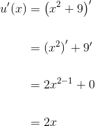
 .
.
Pentru a calcula integrala nedefinită dată facem următorul artificiu de calcul: observăm că  , dar în integrală avem doar
, dar în integrală avem doar  , așadar înmulțim integrala cu
, așadar înmulțim integrala cu  .
.
Se obține:
Am folosit, așa cum ai putut observa, formula 7. din tabelul de mai sus.
Primitive deduse din formula de derivare a produsului a două funcții
Fie intervalul  și funcțiile derivabile
și funcțiile derivabile  , care au derivatele continue.
, care au derivatele continue.
Din secțiunea Operații cu funcții derivabile, din cadrul ghidului Funcții derivabile avem că .
Din această relație ne rezultă că  este o primitivă a funcției , iar mulțimea primitivelor verifică egalitatea:
este o primitivă a funcției , iar mulțimea primitivelor verifică egalitatea:
sau
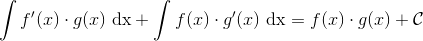,
de unde obținem că:
Definiția CI14: Formula de integrare prin părți
Formula se numește formula de integrare prin părți.
Pentru a folosi această formulă trebuie să ții cont de următoarele:
1) Formulele se utilizează pentru aflarea primitivelor unor funcții produs.
2) Alegerea ”părților”: sau .
3) Integrala de după egal trebuie să fie mai simplă decât integrala de la care s-a pornit (cea de dinainte de egal).
Exerciții rezolvate:
- Să se calculeze
Rezolvare:
Alegem ”părțile”: , iar .
Atunci avem:
din , prin derivare se obține: ;
din , prin integrare se obține:
Calculăm integrala nedefinită, folosind formula de integrare prin părți:
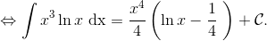
Verificare:
- Să se calculeze integrala nedefinită cu
 , folosind formula de integrare prin părți.
, folosind formula de integrare prin părți.
Rezolvare:
Stabilim care sunt părțile:
 ;
;
.
Calculăm acum integrala nedefinită dată:
Verificare:
Proprietăți ale integralei nedefinite
În cele ce urmează ți se vor prezenta câteva proprietăți ale integralei nedefinite.
Proprietatea de aditivitate a integralei nedefinite
Fie intervalul și două funcții care admit primitive pe intervalul .
Teorema CI7: Proprietatea de aditivitate
Dacă funcțiile admit primitive pe intervalul , atunci funcția sumă admite primitive pe intervalul și are loc următoarea egalitate:
Teorema CI8:
Dacă avem funcția  care admite primite pe intervalul și scalarul , atunci funcția admite primitive pe intervalul , iar pentru are loc egalitatea:
care admite primite pe intervalul și scalarul , atunci funcția admite primitive pe intervalul , iar pentru are loc egalitatea:
Observații:
- Dacă în Teorema CI8, atunci egalitatea din această teoremă nu este adevărată. Într-adevăr, în acest caz, pentru , egalitatea se va scrie astfel: , iar 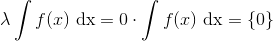, de unde se observă că acestea nu sunt egale.
- Dacă , atunci are loc egalitatea:
Proprietatea de liniaritate a integralei nedefinite
Fie funcțiile care admit primitive pe intervalul și numerele nesimultan nule  (adică
(adică  și
și  nu pot lua valoarea 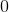 în același timp).
nu pot lua valoarea 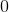 în același timp).
Teorema CI9: Proprietatea de liniaritate
Dacă funcțiile admit primitive pe intervalul , atunci funcția admite primitive pe intervalul și are loc egalitatea:
Exercițiu rezolvate:
Să se determine mulțimea primitivelor următoarelor funcții, folosind proprietățile integralei nedefinite și tabelul de integrale nedefinite:
- unde 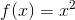 și pentru
- cu
- 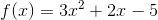, cu
Rezolvare:
- Pentru a rezolva acest exercițiu ne folosim de Teorema CI7: Proprietatea de aditivitate și formulele 1. și 4. din primul tabel de integrale nedefinite din pagina anterioară.
Avem:
- Acest exercițiu se rezolvă folosind Teorema CI9: Proprietatea de liniaritate a integralei și formula numărul 1. din primul tabel de integrale nedefinite al paginii anterioare .
Astfel, avem:

- Rezolvarea acestui exercițiu se face folosind simultan Teorema CI7: Proprietatea de aditivitate, Teorema CI9: Proprietatea de liniaritate a integralei și formula numărul 1. din primul tabel de integrale nedefinite al paginii anterioare .
Avem:
Condiții ca o funcție să admită primitive
Corolar CI10: Continuitate și primitive
Dacă funcția este o funcție continuă pe intervalul , atunci putem spune că funcția admite primitive pe intervalul (nu și reciproc)
Corolar CI11: Puncte de discontinuitate de prima speță și primitive
O funcție care are puncte de discontinuitate de prima speță nu admite primitive.
Reamintim din secțiunea Puncte de discontinuitate, din cadrul ghidul Funcții continue, că un punct  este un punct de discontinuitate de prima speță, dacă limitele laterale ale funcției date în punctul sunt finite și diferite.
este un punct de discontinuitate de prima speță, dacă limitele laterale ale funcției date în punctul sunt finite și diferite.
Corolar CI12: Proprietatea lui Darboux și primitive
Dacă o funcție nu are proprietatea lui Darboux pe un interval, atunci acea funcție nu admite primitive pe acel interval.
Reamintim din secțiunea Proprietăți ale funcțiilor continue, din cadrul ghidul Funcții continue, că o funcție are proprietatea lui Darboux dacă duce un interval într-un interval.
Avem următoarea diagramă, care arată relația dintre continuitate, proprietatea lui Darboux și primitivabilitate:

Exemple:
- Funcția este continuă pe intervalele
 și , fiind compusă din funcții elementare. Funcția este continuă în punctul
și , fiind compusă din funcții elementare. Funcția este continuă în punctul  , deoarece 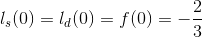.
, deoarece 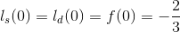.
Ne rezultă că funcția este continuă pe . Atunci, conform Corolarului CI10: ( Continuitate și primitive ), ne rezultă că funcția admite primitive pe .
- Avem funcția 2 \end{cases}">, care are ca și punct de discontinuitate de prima speță punctul
 (acest lucru este demonstrat în secțiunea Puncte de discontinuitate, din cadrul ghidul Funcții continue). Conform Corolarului CI11: ( Puncte de discontinuitate de prima speță și primitive ) ne rezultă că funcția dată nu dmite primitive.
(acest lucru este demonstrat în secțiunea Puncte de discontinuitate, din cadrul ghidul Funcții continue). Conform Corolarului CI11: ( Puncte de discontinuitate de prima speță și primitive ) ne rezultă că funcția dată nu dmite primitive. - Fie funcția Avem că , de unde obținem că funcția nu are proprietatea lui Darboux, de unde, conform Corolarului CI12: Proprietatea lui Darboux și primitive, ne rezultă că funcția nu admite primitive.